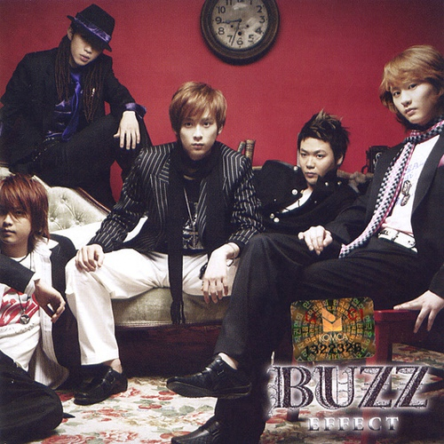

- 요즘 듣는 음악
- 윤미 인생 노래
- 윤미 최애 가수
윤미의 인생 노래
윤미의 길다면 길고, 짧다면 짧은 26년 음악 인생 중, 언제 들어도 행복한 인생노래 TOP3를 소개합니다.
Amy Winehouse - valerie
이 노래는 백예린의 커버곡을 듣고 나서 알게 된 곡이다. 사실 그 전까지 에이미 와인하우스에 대해 잘 알지 못했다.
당시 나는 백예린의 square 직캠에 빠져, 한동안 백예린의 모든 라이브 무대를 매일매일 볼 정도로 백예린의 엄청난 팬이었다.
수 많은 직캠 영상 속에서도 전설의 Square 직캠날 부른 또 하나의 레전드 직캠이 있었는데 그게 바로 valerie였다.
재즈와 레트로 느낌이 섞인 반주와 멜로디는 내 귀를 사로잡았고 특유의 여유로운 그 그루브가 너무 좋았다.
그 이후 나는 매일같이 에이미 하우스와 백예린의 valerie를 돌아가면서 미친듯이 듣고, 또 노래를 추천해 달라는 일이 생기면 이 노래를 자주 언급할 정도로 지금도 내가 가장 좋아하는 노래 중 하나이다.

Avril Lavigne - sk8er boi
이 노래는 내가 초등학교 아마 5학년때 들었던 노래였다. 이 노래를 듣고 처음으로 팝송을 좋아하게 되었다.
일단 에이브릴 라빈의 외모가 너무너무 예뻐서 정말 인형같다고 생각했었고 그녀의 락 스타일의 옷, 머리 등등 모든 것이 멋있었다.
내가 에이브릴 라빈을 한창 좋아했을 때 'girlfriend' , 'The best danm thing'등 이 나오던 레전드 시기였으니 더더욱 좋아할 수 밖에 없었다.
이 노래를 들으면 그 시절의 자유롭고 하이틴스러운 느낌이 뿜뿜하는게 너무 좋아서 지금까지도 들을 때마다 행복해지는 노래이다.
에이브릴 라빈은 이곡 이외에도 위에 언급한 노래와 'complicated','my happy ending' 등등 주옥같은 노래들이 너무 많다. 꼭 기회가 되면 들어봤으면 좋겠다.

버즈 - 겁쟁이
꼽다보니 옛날 노래만 나오게 되는데 인생에서 오래도록 기억에 남는 음악들을 생각하다보니 자연스럽게 오래된 노래들이 나오는 것 같다.
이 노래는 뭐 말해야 입아픈 대한민국 80-90년대생들의 최고의 노래가 아닐까. 여자들은 물론 남자들이 특히 좋아하는 버즈
정말정말정말 버스의 많은 명곡들 중 뭐를 꼽을까 사실 고민될 정도로 좋은 곡들이 많다.
그 중에서도 겁쟁이는 내가 버즈에 입덕하게된 노래이다.
당시 초등학교 3학년..?4학년 쯤이던 나는 이 노래와 뮤비를 보고 민경훈과 버즈에 정말 홀딱 반해 노래를 미친듯이 반복해서 들었었다.
그래서 정말 전주만 들어도 예전의 향수가 느껴지면서 그냥 노래좋다~ 가 아니라 진한 여운이 느껴지는 노래이다.